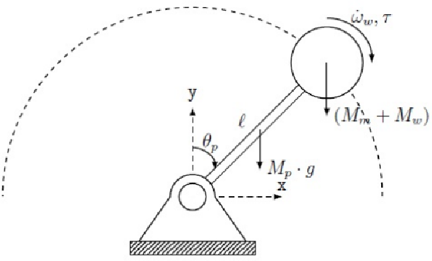

COIL Project: Inverted Pendulum with Reaction Wheel
This COIL project brings together students from Lisbon Polytechnical University (Portugal) and Amsterdam University of Applied Sciences (Netherlands) in a shared, hands-on learning experience rooted in applied physics and engineering.
Introduction
Over a four-week period, mixed international student teams will collaborate to design, simulate, and implement a reaction-wheel inverted pendulum — a classic control systems challenge with applications in robotics and aerospace.
The goal is to combine theoretical analysis, computational modeling, and practical design, all while engaging in international teamwork and intercultural exchange.
Learning Objectives
Apply principles of classical mechanics, control theory, and embedded systems.
Simulate dynamic behavior of the pendulum system using Python.
Collaborate across institutions and cultures using online tools.
Develop technical, communication, and project management skills.
Reflect on engineering practices in a global context.
What is a COIL? COIL stands for Collaborative Online International Learning. It’s a teaching method that connects courses from different countries through online, project-based collaboration. In a COIL module, two or more instructors co-design and co-teach a shared activity where students work in mixed international teams to complete authentic tasks and reflect on intercultural learning.
How to COIL (Collaborative Online International Learning)
What is a Reaction Wheel Inverted Pendulum? A Reaction Wheel Inverted Pendulum is a complex mechanical system designed to balance an upright pendulum using a rotating disk (the reaction wheel, often being called a Fly-Wheel). The goal is to control the wheel’s angular momentum to stabilize the pendulum in an upright position.
An inverted pendulum is a pendulum balanced in its unstable upright position — like trying to keep a stick standing vertically on your fingertip. It is a classical example of an unstable system that requires active control to maintain balance.
Real-World Examples
A Segway balancing on two wheels
A rocket stabilizing itself during launch
A human standing upright, continuously adjusting posture
In our case, the pendulum starts hanging downward (its stable position) and must first swing up, then be stabilized upright — even when subjected to unknown disturbances (like small external pushes).
The system uses a reaction wheel, rather than a laterally moving base (like in a cart-pendulum):
It consists of a rotating rigid disk or wheel which is mounted on the pendulums arm.
The axis of rotation of reaction wheel and pendulum are co-linear.
The wheel is driven by DC motor which is attached directly, or through a system of gears or pulley and belts.
According to Newton’s laws of motion, a change in the wheel’s angular velocity creates a reaction torque
This torque can be used to adjust the angle of the pendulum
Thus, the pendulum can be brought upright and kept balanced using only the internal motion of the wheel.
Why is This Important? This is more than a mechanical challenge — it’s a control engineering problem.
The goal is not just to make it work, but to optimize it:
Minimal energy use
Fast stabilization
High resilience to noise or disturbances
The system is nonlinear, coupled, and unstable by nature
It requires a well-designed controller:
First a bang-bang controller to swing it up
Then a PID or LQR controller to stabilize it upright
LQR (Linear Quadratic Regulator) is expected to give the best results
As such, the project combines physics, mechanics, electronics, and software with real-world constraints — an ideal platform to learn:
Dynamics and modeling of unstable systems
Sensor and actuator integration
Real-time control strategies
Simulation vs implementation differences
Performance analysis in real-world conditions
It’s a hands-on way to understand how to design, simulate, build, and control a dynamic system — a core challenge in modern engineering.
Tools
This project combines software-based simulation with hands-on hardware implementation. Below is a list of the essential tools and components you’ll be working with, as well as the formats and documentation expected for your final report.
Hardware
Mechanical workshop tools and materials
Use mechanical workshop tools (saw, drill, etc) and materials (wood, bars, tubes, etc.) to manufacture the overall support structure of the system, and to fix the system.
3D Printer and filaments
Use 3D printing for custom parts such as wheel mounts, pendulum arms, mechanical joints and gears.
Rods, bearings and belts
Special components that are hard to manufacture to the required precision, like rods, bearings and belts, can be acquired in specialist shops, e.g. for 3d printers or UAVs or sports equipment, or similar.
Cabling, Breadboarding, Wiring & Soldering Equipment
Needed to build and connect the system reliably.
DC Motor (Actuator)
Drives the reaction wheel. Choose components carefully based on ratings.
DC Power supply
While batteries could do the job, it is highly recommended to use laboratory grade power supplies during development: the power requirements are typically high, and more importantly, a lab grade power supply provides a direct control over the maximum ratings.
DC Motor Driver Circuit
Drives the reaction wheel. Choose components carefully based on ratings.
(Sensor) AS5600 Magnetic Rotary Sensor
Precise angle measurement of the pendulum shaft.
👉 https://www.ams.com/en/as5600
Arduino (Microcontroller)
Arduino board that runs the real-time control logic. Any UNO grade microcontroller should do. We recommend to use
Multimeter & Osciloscope
Instruments to analyze and characterize the performance of components and the final system
You must know very well the behavior and limitations of your electrical components:
Key Specs to Review:
Supply voltage range
Max current and power
Sensitivity and accuracy (e.g., of sensors)
Include this in your technical dossier.
Software
Visual Studio Code (VS Code) - Main environment for code editing, running Python/Jupyter, and managing Git projects, i.e. tools below can be accessed directly within VS Code using extensions.
Python Used for modeling, simulation, and data analysis.
Jupyter Notebooks - Interactive Python environment combining code, plots, and documentation.
GitHub - Version control and collaboration platform.
Arduino (Microcontroller + IDE) - The Arduino IDE is used to write and upload
.inofiles.Onshape - Cloud-based CAD tool
Ultimaker Cura - Recommended slicer software to prepare
.stlfiles for
System Overview
A Reaction Wheel Inverted Pendulum is a complex mechanical system designed to balance an upright pendulum using a rotating disk (the reaction wheel, often being called a Fly-Wheel). The goal is to control the wheel’s angular momentum to stabilize the pendulum in an upright position.
An inverted pendulum is a pendulum balanced in its unstable upright position — like trying to keep a stick standing vertically on your fingertip. It is a classical example of an unstable system that requires active control to maintain balance.
Real-World Examples of inverted pendulum
A Segway balancing on two wheels
A rocket stabilizing itself during launch
A human standing upright, continuously adjusting posture
In our case, the pendulum starts hanging downward (its stable position) and must first swing up, then be stabilized upright — even when subjected to unknown disturbances (like small external pushes).
The system uses a reaction wheel, - It consists of a driven or freely rotating rigid disk or wheel.
Real-World Examples of reaction wheels / flywheels
Physics Toys
Gimbal
A magnetotorque in satellites
A reaction wheel inverted pendulum ,
It consists of a rotating rigid disk or wheel which is attached to the pendulums arm.
The axis of rotation of reaction wheel and pendulum are co-linear.
The wheel is driven by DC motor which is attached directly, or through a system of gears or pulley and belts.
According to Newton’s laws of motion, a change in the wheel’s angular velocity creates a reaction torque
This torque can be used to adjust the angle of the pendulum
Thus, the pendulum can be brought upright and kept balanced using only the internal motion of the wheel.
Note: there is a variants:
the cart-pendulum, which uses a laterally moving base to stabilize the inverted pendulum
similarly, a rotating base

Components
Pendulum: A rigid arm that pivots at its base and must be balanced vertically.
Reaction Wheel: A rotating mass driven by a motor, mounted on the pendulum. It creates a counteracting torque to stabilize the system.
Controller: Software that measures the system’s state (e.g., angle and angular velocity) and determines how to drive the wheel to maintain balance.
Collaboration Plan
This project brings together international student teams to model, simulate, implement, and control a Reaction Wheel Inverted Pendulum (RWIP). The goal is to explore both technical and collaborative challenges in control engineering through simulation and physical implementation.
Week 1: Kickoff & Icebreakers
Meet your international teammates (via Zoom or Teams).
Participate in structured icebreaker activities.
Share backgrounds, expectations, and technical interests.
Set up collaborative tools: VS Code, Python, GitHub, shared folders.
Begin reading reference material on inverted pendulums and reaction wheels.
💡 Tip: Keep a shared team logbook and schedule weekly check-ins.
Week 2: System Understanding & Parameter Assignment
Study the inverted pendulum and reaction wheel system.
Identify key physical and control concepts: torque, moment of inertia, stability.
Assign unique parameter sets to each team (e.g., pendulum length, mass, motor power, wheel inertia).
Clarify technical goals and system constraints.
Start drafting control objectives.
Week 3: Simulation & Strategy Development
Build Python simulations of the RWIP system.
Explore system dynamics (e.g., swing-up vs. stabilization).
Identify stable and unstable parameter regions.
Test control strategies:
Open-loop behavior
Swing-up with bang-bang control
Stabilization using PID and LQR controllers
Compare performance metrics across teams.
Week 4: Physical Implementation & Integration
Assemble the RWIP using available materials (e.g., 3D printed parts, hardware components).
Integrate sensors (e.g., AS5600 magnetic sensor) and actuators (brushed DC motor).
Wire and interface the system with Arduino or compatible microcontroller.
Characterize physical properties: friction, inertia, motor constants.
Validate component specs vs. datasheets.
Week 5: Testing, Comparison & Analysis
Deploy controllers on the Arduino (migrating from Python simulations).
Test swing-up and stabilization phases in real conditions.
Compare experimental results with simulated predictions.
Measure performance: response time, overshoot, stability margins.
Evaluate control effectiveness and hardware limitations.
Final Session: Reflection & Presentation
Present each team’s approach, implementation, and results.
Reflect on the technical, intercultural, and collaborative experiences.
Share lessons learned and insights into system limitations.
Discuss real-world relevance and next steps for further development.
Optional Deliverables Each team should maintain:
Simulation notebooks (.ipynb)
Arduino code (.ino)
CAD files (.stl, .step)
Data logs (.csv)
Diagrams, images, and demo videos (.png, .mp4)
-Description of the system and control strategy
Simulations and analysis
Photographs and diagrams
Electrical and mechanical schematics
STL files for 3D parts
Software architecture diagrams
Source code (Python and Arduino)
Description of tests and results
Short video of system in action
Reflections and conclusions
Include all in your team’s final GitHub repository.
🧭 Remember: Control engineering is not just about making it work — it’s about making it optimal, reliable, and tracable.